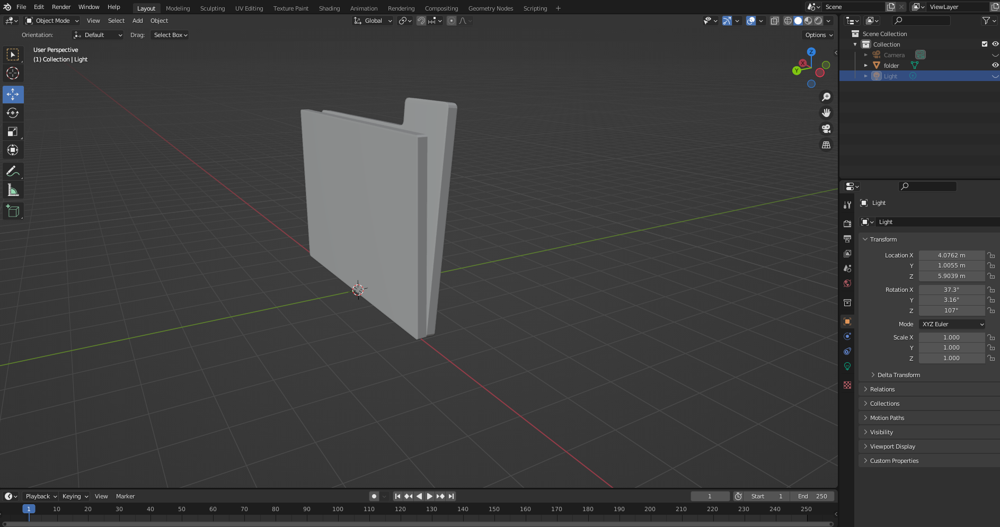
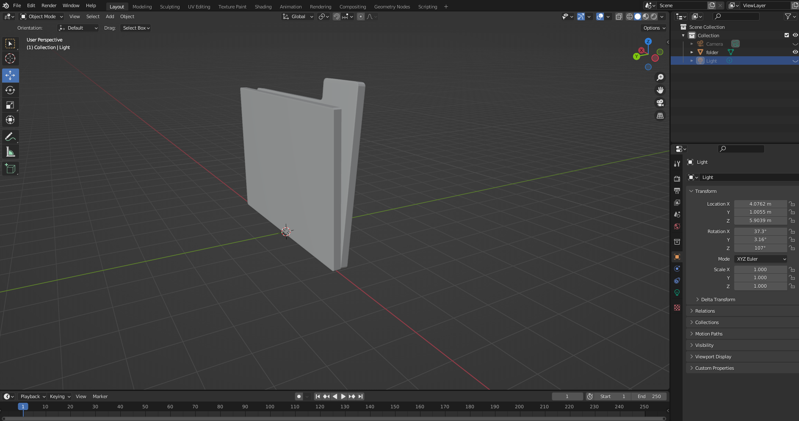
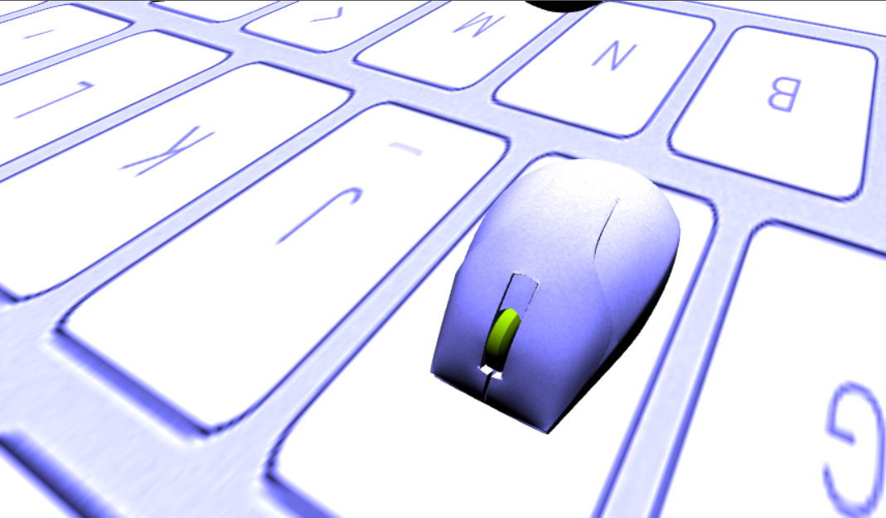
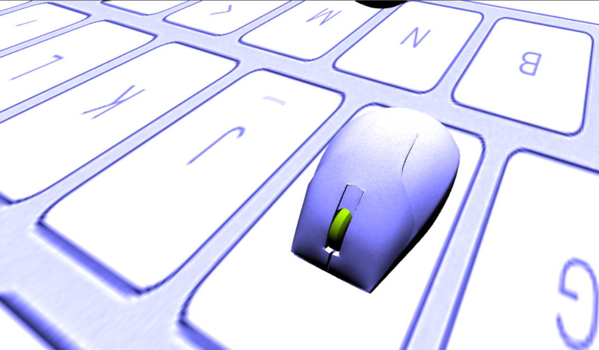

L'impavido mouse, nonostante sia stato abbandonato da tutti gli altri accessori per Pc, decide comunque di provare ad affrontare
i virus insinuati nel computer, a causa della negligenza dello studente che lo usa quotidianamente. Il pericolo che corre è grande, visto
che basterebbe un solo contatto con uno dei virus per risucchiarlo nel matrix senza più speranza di ritorno.
Lo scopo del gioco è recuperare le varie cartelle sparse nella mappa prima che i virus che ne compromettano il contenuto.
In particolare, si dovranno recuperare tre cartelle per poi avere nuove istruzioni su come continuare.
Per la realizzazione della scena, sono state utilizzate diverse tecniche.
Prima di tutto è stato creato uno skybox tramite un cubo texturato adeguatamente e tramite la visone prospettica
quest'ultimo restituisce la sensazione di un mondo infinito. L'ambiente è stato poi reso "vivo" creando un piano
con l'applicazione della texture di una tastiera, per andare a creare una scena quanto piò verosimile ad un computer. La dimesione del piano corrisponde
alla dimensione della mappa. Infatti se con il mouse ci si spimge oltre la fine del piano, viende stampato un immagine che non permette di prosegire nel gioco
e permette al giocatore di ricominciare la partita tramite un bottone.
Per completare la resa è stato creato un cubo su cui è stata applicata la texture di uno schermo di un pc. Ora che la scena
è stata definita si può inizare a trattare gli oggetti che la animano.
La scena è composta da diverse Mesh che vengono importate da altrettanti file in formato Wavefront OBJ. La più complicata, cioè il mouse è stato reperito online e poi modificato per ottenere l'effetto desiderato nella scena. Infatti l'oggeto risultava troppo complicato e pesante, quindi si è proseguito a delle modifiche che non hanno impattato in maniera significativa sulla sua resa, ma che ne hanno notevolmente semplificato la sua mesh. Un altro oggetto da notare è il virus che è stata realizzato tramite Blender in pochi semplici mosse. Tramite l'estrusione e il bevelling di una sfera è stato possibile ottenere un risultato molto curato, riprendendo la forma tipica dei virus. Per importare le mesh nella scena viene utilizzata la funzione loadObj presente nel file utils.
 


Ad ogni oggeto della scena è stata applicata una texture. Per l'implementazione delle texture ho seguito gli esempi
dei codici visti a lezione. Ho creato delle texture utilizzando WebGL e le sue funzioni,
in particolare "gl.createTexture()" e "gl.texImage2D()", che se possibile applica alle immagini
la tecnica del "mipmap" oppure vengono settati dei parametri standard per la sua gestione.
Per riuscire ad avere un effetto più verosimile il mouse e la rotella
sono stati importati come due oggetti distinti che si muovono nella stessa direzione.
La texture delle cartelle è stata creata utilizzando un'immagine che rappresentasse della carta invecchiata e
successivamente vi è stata applicata la scritta "TOP SECRET" per avere l'effetto voluto.
Ho inoltre utilizzato come texture una foto personale, come richiesto dalla consegna,
per creare il boss finale che appare nel momento in cui tutte le cartelle sono state recuperate.
 

Per illuminare il mondo, è stata posta una luce sulla sommità della scena in modo da simulara una sorta di luce naturale.
Tale luce è costruita come una luce direzionale che, colpendo gli oggetti, grazie ad una depth_texture (che sfrutta
le coordinate di profondità), è in grado di determinare quali oggetti siano in ombra e quali no. Attraverso l'interazione l'utente può andare a modificare
i parametri della luce, e cioè la sua posizione rispetto agli assi x,y e z.
Si è poi stabilito un bias fisso che limiti il cosiddetto effetto "shadow acne", per quanto possibile.
Dal pannello di controllo è possible selezionare se renderizzare la scena con le ombre prodotte dagli oggetti oppure no.
Il problema principale di questo tipo di illuminazione sono le ombre: infatti esse risultano leggermente pixelate sia sugli oggetti,
sia nella loro proiezione prospettica sul piano, andando a resituire un risultato più che accettabile, ma restando comunque di bassa qualità.
Un possibile miglioramento, sarebbe quello di applicare un algoritmo di shading performante per riuscire a smussare i contorni delle ombre restituendo
un effetto più verosimile.


Il movimento del mouse all'interno della scena è stato gestito prendendo spunto dal file cg-car2.js fornitoci a lezione.
Infatti la fisica utilizzata ricalca molto da vicino quella di un'auto con l'unica differenza che non deve essere gestiro anche il movimento
delle ruote.
Il movimento nella mapppa del mouse è caratterizzato da alcune collisioni che può avere con gli oggetti in scena. Infatti utilizzando la coordinate x,y,z del mouse
si è in grado di determinare in che punto siamo localizzati e di conseguneza capire se si è entrati in collisione con un oggetto o meno.
Sono state implementae due tipi collissioni:
Entrare in contatto con un virus provaca la fine del gioco, permettendo di ricominciare la partita grazie ad un bottone di restart. Mentre la collisione con le cartelle porta alla scomparsa di quest'ultime dalla scena, andando inoltre a comunicare all'utente di aver recuperato una cartella.
I virus presenti nella scena sono soggetti a rotazione rispetto ai propri assi. Queste rotazioni sono stata realizzate tramite la libreria "m4.js" e in particolare le funzione "m4.yRotate(m, angleInRadians, dst)" e "m4.xRotate(m, angleInRadians, dst)" che permettono di rotare una matrice in base ai suoi assi.
All'utente sono permesse diverse interazioni, fruibili sia da pc che su mobile. Principalmente l'interfaccia si presenta con una canvas in cui si vede l'ambientazione,affianco una descrizione dei comandi, e infice una serie di slider e bottoni che permettono di interagire con la luce e la posizione della camera. L'interazione è possibile:
In questa versione per muovere il mouse presente nella scena e è necessario utilizzare i tasti W,A,S,D rispettivamente
per muoveri in avanti, a sinistra, indietro e a destra.
L'utilizzo delle freccie da la possibilità di effettura dei movimenti della camera nelle tre direzioni, lasciando
però come target di riferimento il mouse nella scena.
La camera può essere gestita anche trascinando il muose sulla scena, orientandosi a proprio piacimento.
Inoltre attraverso la rotella del mouse è possibile gestire lo zoom.
I bottoni presenti permettono di orientare la camera in tre posizioni. Dietro il muose, di fronte al mouse e infine una visuale
dall'alto per avere tutta la scena sotto controllo.
Gli slider danno la possibilità all'utente di mouvere la posizione della luca nelle tre direzioni x,y,z. Questa funzione risulta
utile e più chiara, se combinata con la selezione di mostrare le ombre prodotte dagli oggetti sulla scena.
Infatti è inoltre possibile selezionare se renderizzare la scena con le ombre o meno.
Per ovviare alla mancanza della tastiera durante il gioco nella versione mobile, sulla sinistra della canvas sono stati posti
quattro bottoni che permettono di muoversi nella scena.
La posizione di questi quattro bottoni è stata quindi scelta apposta per fare in modo che il giocatore possa
impugnare lo smartphone e utilizzare i pollici di entrambe le mani, come fosse un joystick di una console di gioco.
Mentre sulla destra della canvas sono stati inseriti quattro bottoni che permettono di spostare la camera.
Come già discusso sono state impiegate diverse librerie come supporto. Le librerie in questione "webgl-lessons-ui.js" e "m4.js" sono state riprese dalle lezioni e sfruttate per velocizzare la scrittura del codice. La prima principalmente usata in maniera facile e veloce per inserire lo slider nel canvas ha grandi potenzialità nell'interazione con l'utente. Mentre la seconda è stata usata per semplificare molti calcoli tra matrici, fondamentali nello sviluppo del codice.